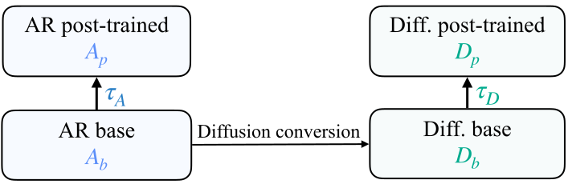
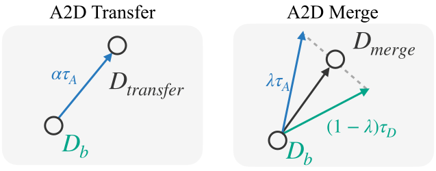

Enhancing Diffusion Language Models with Autoregressive Post-Training Weights
arXiv preprint, 2026
More


Diffusion language models (dLLMs) have emerged as a promising alternative to autoregressive (AR) language models, offering flexible token-update orders and parallel decoding. Recent dLLMs are often initialized from pretrained AR models before diffusion conversion in order to inherit their learned representations. After the conversion, however, they typically ignore the extensive post-training ecosystem of their AR ancestors. In this work, we show that these existing AR post-training weight updates can instead be effectively recycled to enhance diffusion models. Despite the changes by AR-to-diffusion conversion, directly adding an AR post-training weight update to a diffusion base model remains effective, bringing its performance close to that achieved by direct diffusion post-training. Notably, AR and diffusion post-training updates are nearly orthogonal in weight space, yet induce substantially more aligned representation changes in the diffusion model. Their distinct updates are also complementary: composing their weights can retain gains from both regimes and further improve the post-trained diffusion model. Based on these findings, we propose A2D, a simple training-free framework for enhancing diffusion models with existing AR post-training resources. A2D can transfer capabilities from AR post-trained models to diffusion base models, and further improve already post-trained diffusion models by composing AR and diffusion post-training updates. Across various dLLMs, including Dream, DreamReasoner, DiffuCoder, Dream-Coder, Nemotron-Labs-Diffusion, and DiffusionGemma, A2D reliably improves instruction following, mathematical reasoning, and coding with both supervised fine-tuning and reinforcement learning updates, without additional training, or inference-time computation.